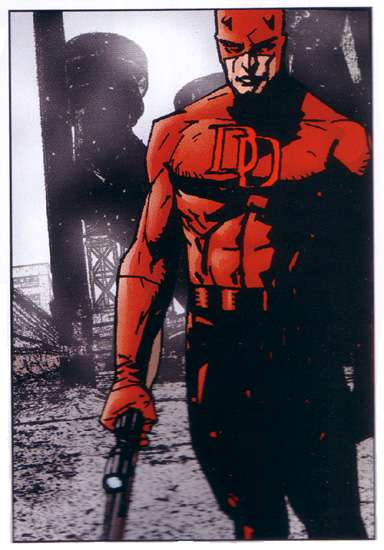

|
|
As A Whole  Although Daredevil's career is not as popular as Spiderman was. He was one of the most recognizable superheroes in the Marvel world due to his title "The Man Without Fear". is costume was very cool among Marvel Super heroes. He represents a superhero who fights for justice among victims who are blindly abused and maltreated. He dwells in a world of eternal night – but the blackness is filled with sounds and scents, tastes and textures that most cannot perceive. Although attorney Matt Murdock is blind, his other four senses function with superhuman sharpness. By day, Murdock represents the downtrodden. At night he is Daredevil, a masked vigilante stalking the dark streets of the city, a relentless avenger of justice. For Daredevil, justice is blind… and for the guilty (and often himself), there’s hell to pay. So therefore, Daredevil was one of the Marvel superheroes who is really worth remembering not only for his costume but also for his cause.
RETURN TO DAREDEVIL'S INTRODUCTION PAGE
|